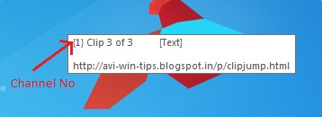

Channels
About
How to Use
Changing Channels in Paste Mode
Ideas on using
The "Pit" Channel
PitSwap
Tips for better productivity
Clipjump Channels are meant to allow users to use multiple channels of multiple Clipboards for sorting related Clipboard items together.
The feature is accessible from the Clipjump Action Mode (with easy key S) as well as the Tray Menu.
Channels are different series or groups in which clips are stored.
You can create unlimited distinctly named channels to store Clipboard data and store related clips in them.
The default channel is 0 and is named as Default.
As said above, use the default shortcut or the Tray Menu for Clipjump to open the choose Channel Window.
The Window should appear instantly and you will see the Channel Number 0 (Default) to be active by default.
Use the Up Down arrow keys and select a different channel. As 0 is the only channel used in a new installation of Clipjump, you will be only allowed to select the next Channel 1 .
Select the new channel and give it a name. Now click Use Channel. You will see a tip containing a confirmation message that Channel [name] is now active where name is the name of your channel.
Now try copying some data to Clipboard an you will see the confirmation tip "Transferred to Clipjump" to be preceeded by a {[name]} which will mean the item is now captured to Clipjump Channel 1.
Now press Ctrl+V to enter [PASTE MODE] . You will see a {[name]} also preceeding the Clip number message (Clip x of y) . As
you have already guessed , this means the Clip is contained in Channel [name] .

Now as you are using Channel 1, you can open the Channel window and use the next available Channel (Channel 2) . You can use as many as channels you want and give them any name you like.
IMPORTANT
Note that Clipjump uses Channel 0 as the default and the main channel and should be used for general purposes . Channel 0 (Default) is the only channel for which the
Minimum Number of Active Clips setting is valid, all other channel have no minimum and thus store unlimited clips.
The setting Retain Clipboard data upon Application restart is invalid on channels other than 0 and so channels 1+ store clips until they are deleted by the user.
[v9.5+] You can change channels in the Paste Mode itself by using the Up-down keys . Use the Up arrow key to increment the channel by 1 and
use the Down arrow key to decrement the channel by 1. Cycling channels via this method works like a cycle , so if you press the Up arrow key with the last
Channel (say #2) active , you will be jumped back to the first channel (#0).
One of the best uses of Clipjump Channels is using it as a top 10 repository for storing frequently used items. As said above , you can copy and thus save your signatures , blog links and avatar images in a channel and quickle access them when needed.
The Pit channel is a reserved channel NAME with automatic Incognito feature. When a channel is named as Pit, the channel does not transfer
it's clips to the Clipjump History thus creating a false INCOGNITO MODE situation. Note that when a channel named Pit is active, the INCOGNITO mode
is physically not turned ON and so you don't see the Clipjump's tray icon being grayed out.
The "Pit" channel can be quickly used to capture junk or confidential data to Clipjump and then delete them all at once with the Delete ALL mode
(Ctrl + V + X + X + X)
PitSwap [v9.5+] allows you to jump to an existing Pit channel from any other active channel with the ease of a hotkey. Activated with the Action Mode easy key P , it is a sort of 'channel toggler'. When pressing PitSwap shortcut when a channel such as Default(#0) is active , the channel will be
automatically changed to a found Pit named channel. When pressing the shortcut , the toggle will work in reverse changing the active channel back to the one
you were using (here 'Default') . Note that the PitSwap toggle is deactivated silently when you first use PitSwap and then eventually change the Pit channel
with the Channel Selector GUI OR by the Up-down keys in the Paste Mode.
- You can use the up-down arrow keys rather than Mouse clicks for increasing/decreasing Channel numbers.
- When in the default channel selecter mode, use Alt+U as a shortcut for the
Use Channel button.
- I recommend using the Minimal GUI for the channel Selector. This feature can be accessed from the
Channels section
of the Settings Tool. When using the minimal GUI , you will have to use Up-Down arrow keys to change channels and Enter key to activate a channel
.
- If you regulary change Clipjump channels, you can also create a system-level shortcut for opening Channels manager directly rather than using a 2nd level Action
Mode shortcut from the Settings Editor.
Translate